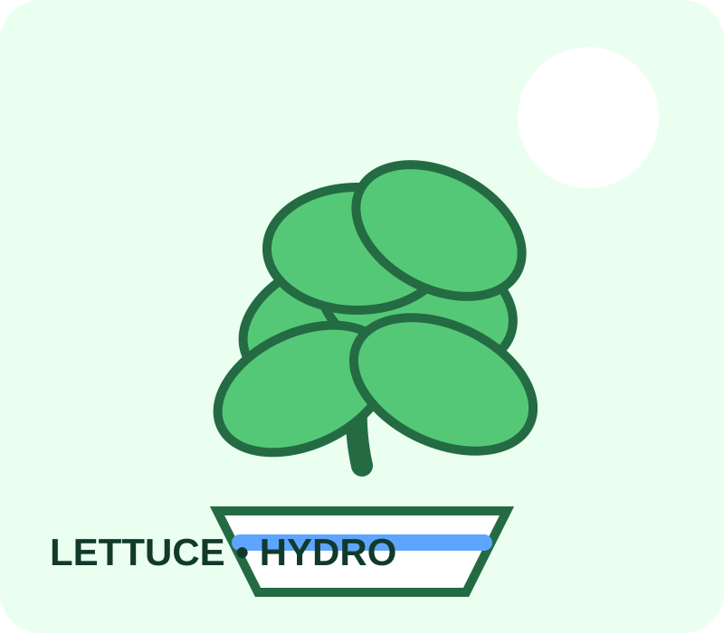
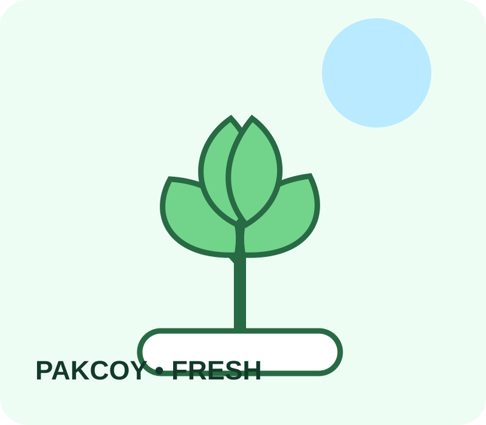

💧
Water Efficient
Air dan air bernutrisi dialirkan ke akar tanpa membutuhkan lahan tanah yang luas.
Tanaman hidroponik fresh untuk rumah, meja belajar, dan ruang kecil kamu. Simple, cute, dan ditanam dengan penuh perhatian. 🌱

Air dan air bernutrisi dialirkan ke akar tanpa membutuhkan lahan tanah yang luas.
Tanaman dirawat dari fase tumbuh sampai siap dipanen dengan lingkungan yang terkontrol.
Cocok untuk rumah dan ruang terbatas karena tidak membutuhkan kebun tanah yang besar.
Menanam hidroponik bisa jadi aktivitas seru untuk mengenal tanaman dari dekat.
Benih dipilih dan disiapkan untuk fase pertumbuhan.
Akar mendapatkan air dan nutrisi yang dibutuhkan.
Kondisi tanaman dipantau agar tetap sehat dan segar.
Tanaman siap dipanen atau dikirim sesuai kebutuhan.

Nazwahydroponik hadir untuk membuat hidroponik terasa dekat, simple, dan menyenangkan. Dari leafy greens sampai pilihan unik, semuanya dirancang untuk menjadi bagian kecil yang menyegarkan dari keseharian.
Chat langsung untuk pesan tanaman hidroponik.
Chat WhatsApp ↗